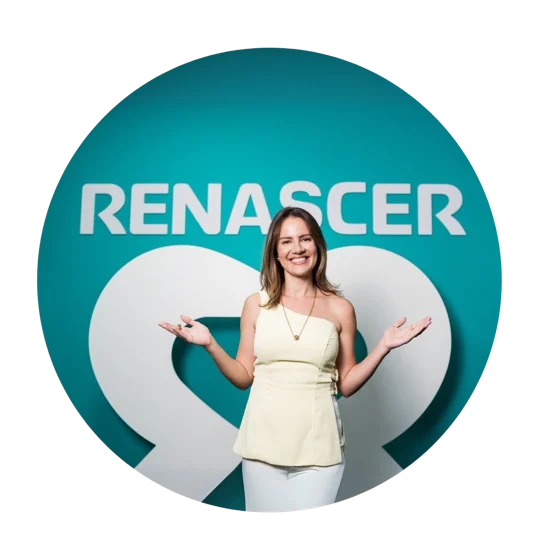
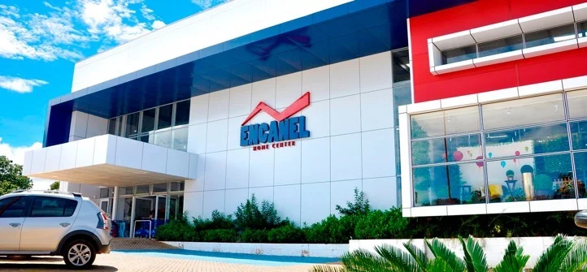
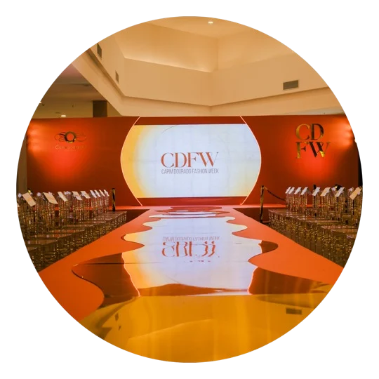
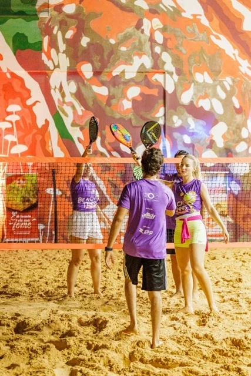

Diagnóstico &
planejamento
Entenda o cenário do seu negócio e transforme prioridades em um plano com metas, canais e ações.
Quero encontrar meu caminhoEstratégia antes de tudo.
Clareza para decidir. Estratégia para crescer.
Eu ajudo você a transformar ações soltas em um marketing com direção.
LORENA MACEDO
Mais de 15 anos conectando marcas, pessoas e negócios.
01 / DA ESTRATÉGIA À EXECUÇÃO
Uma boa campanha começa muito antes do primeiro post. Começa com visão de negócio, prioridades claras e um plano que conecta cada ação.
Agências, social media e tráfego fazem parte da execução. Meu papel é organizar o caminho e direcionar o time certo para percorrê-lo.
Encontre a solução para o seu momentoDiagnóstico, posicionamento e planejamento.
Plano de ação, gestão de demandas e indicadores.
Profissionais alinhados e execução orientada.
Três níveis. Uma mesma direção.
02 / SOLUÇÕES PARA O SEU NEGÓCIO
Do primeiro diagnóstico à gestão do dia a dia: uma atuação próxima para dar estrutura ao marketing da sua empresa.
Entenda o cenário do seu negócio e transforme prioridades em um plano com metas, canais e ações.
Quero encontrar meu caminhoVisão de negócio e direcionamento para conectar posicionamento, comunicação e decisões de marketing.
Quero uma visão estratégicaEstruturação de equipes, processos e rotinas. Gestão próxima do time, das demandas e do orçamento.
Quero organizar meu marketingPlanejamento e gestão de campanhas, experiências, eventos e lançamentos de marcas e produtos.
Quero tirar uma ideia do papelUm espaço de troca para gestores e marcas pessoais que precisam de clareza sobre seus próximos passos.
Conhecer a mentoriaTreinamento de equipes e aprendizado em grupo no Mastermarketing, conectando estratégia e prática.
Quero desenvolver meu time03 / UM OLHAR DE FORA. UM CAMINHO MAIS CLARO.
Você sabe que precisa fazer alguma coisa pelo marketing da sua empresa. Mas o quê, com quem e por onde começar?
Na mentoria, eu compartilho minha experiência para ajudar você a enxergar possibilidades, definir prioridades e tomar decisões com mais clareza.
04 / ESTRATÉGIA QUE SAIU DO PAPEL
Uma seleção de projetos da minha trajetória em branding, varejo, eventos e experiências.

Planejamento estratégico, branding, gestão terceirizada e implementação de equipe de marketing.

Planejamento, criação e lançamento do rebranding de uma marca do varejo de construção.

Evento que reuniu marcas de moda do Tocantins, conectando comunicação e experiência.

Ação de experiência e relacionamento com clientes e marcas do segmento.
05 / PRAZER, LORENA
Minha trajetória me permitiu viver o marketing por inteiro: da criação à estratégia, da gestão de equipes ao relacionamento comercial.
Sou pós-graduada em Marketing Estratégico pela FGV/SP e em Negócios pela USP Esalq. Fui gerente de marketing do Capim Dourado Shopping e, à frente da LM Marketing, ajudo empresas e gestores a organizarem suas estratégias.
Acredito que marketing bem-feito também é sobre construir marcas fortes, que se conectam de verdade com as pessoas.
06 / O PRÓXIMO PASSO COMEÇA AQUI
Me conte em que momento está o seu negócio. Vamos conversar sobre os desafios e encontrar um caminho possível para a sua marca.
Prefere falar diretamente?